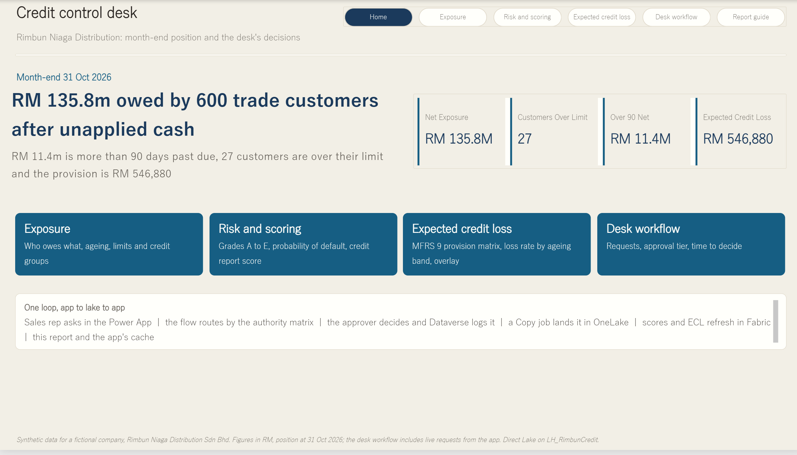
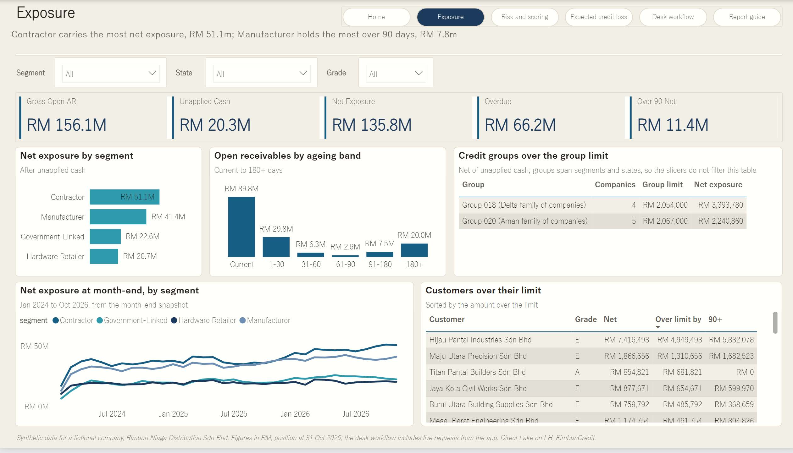
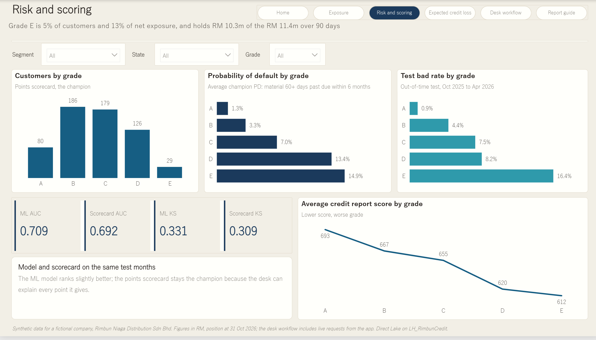
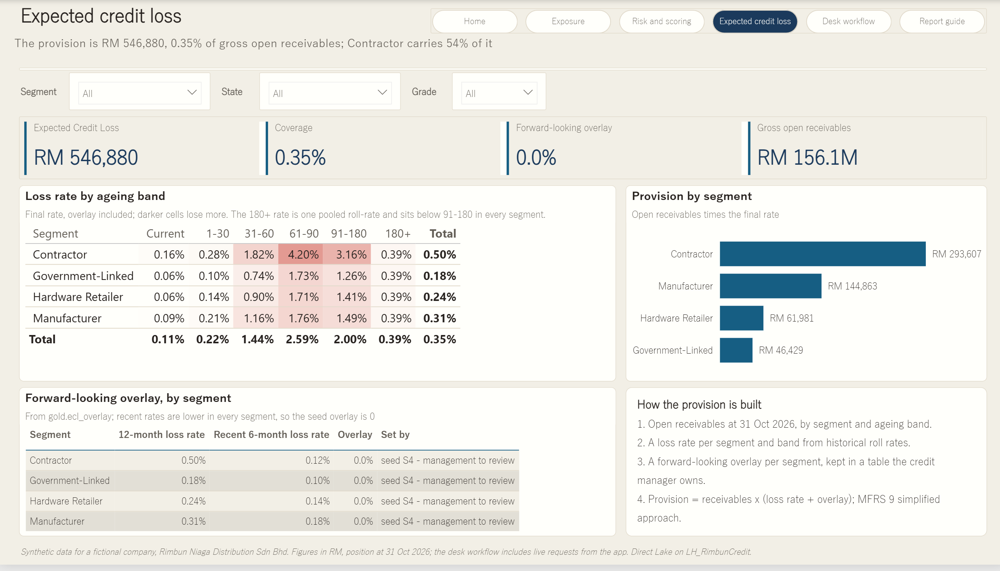
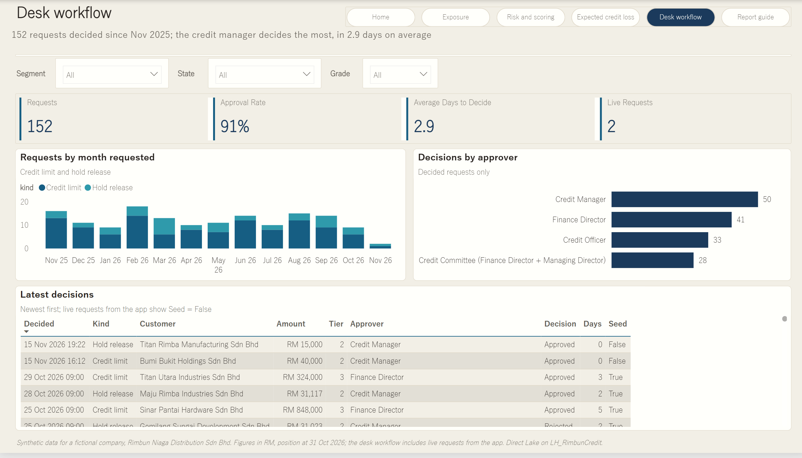
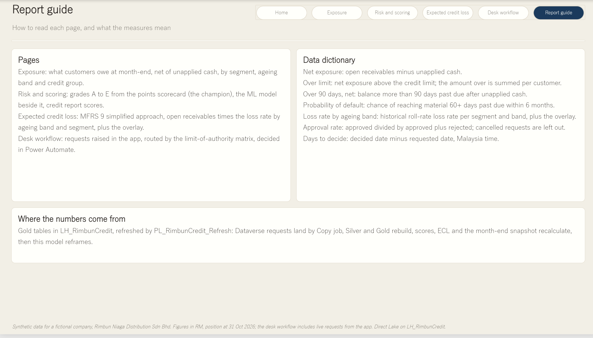

Build a credit control desk on Microsoft Fabric and Power Platform
Receivables land in a Lakehouse, Materialized Lake Views build exposure and ageing, an ML model and a points scorecard grade every customer, an MFRS 9 matrix sets the provision, and a canvas app with approval flows sends every decision back to the lake. Ten steps, roughly 13 hours, every figure read back against a value computed somewhere else.
Why anyone builds this
A credit desk at a distributor answers the same questions every day: who is over their limit, who is slow to pay, how much provision do we need, and should we release this held order? Usually the numbers sit in an ERP export and a spreadsheet, and the decisions sit in email.
This build puts the numbers and the decisions on one loop. The app shows the score next to the request, the matrix decides who approves, and the decision comes back into the data the next report reads.
What you are building
| Layer | What it is |
|---|---|
| Generator | One seeded Python module: 600 customers, about 90,000 invoices, 263,402 rows in 12 tables |
| Materialized Lake Views | 8 Silver and Gold views; 30 checks, 0 failed |
| Scoring and ECL | A registered ML model, a points scorecard (the champion), and a provision of RM 546,880.42 |
| Dataverse | Five tables: requests, hold releases, the authority tiers, the decision log, and a Gold profile cache |
| Copy jobs | Dataverse into the lake hourly; Gold back into Dataverse on demand |
| Canvas app and flows | Today, Customers and Requests screens; two approval flows routed by the matrix |
| Direct Lake model and report | 14 tables, 39 measures, 6 pages |
| Pipeline | 13 activities, a verdict gate after each notebook |
Get the code
Everything the steps below tell you to run is in one public repository, MIT licensed, no sign-up. Get it before step 1: the Variable Library is the first thing you deploy.
git clone https://github.com/BIVenture2025/rimbun-niaga-credit-desk-fabric.git cd rimbun-niaga-credit-desk-fabric
| Folder | What is in it |
|---|---|
generator/ | The data generator, the Silver/Gold SQL, scoring and ECL, and the month-end snapshots |
notebooks/ | The Fabric notebooks, the scripts that build them, and offline replays of each |
platform/ | Variable Library and the refresh pipeline |
dataverse/ | The seeded request and decision history |
app/ | Canvas app source, flows, and the solution package |
model/ · report/ | The Direct Lake model (TMDL) and the six-page PBIR report, with their generators |
run/ | PowerShell scripts that upload a module, run a notebook and save its verdict |
docs/ | Contract, specs, control totals, results, closure, install notes, and this guide |
docs/SCORING_ECL_SPEC.md is how the grades and
the provision are worked out, docs/INSTALL_NOTES.md is what a solution does not carry, and
docs/CONTROL_TOTALS.md is what every later figure reconciles to.The build
Set up the workspace, the Variable Library and Git
Everything on the Fabric side lives in one workspace on a capacity. Three things go in before any data: the Variable Library, the Git connection and the Lakehouse.
- Sign in at app.fabric.microsoft.com with a work or school account and create a workspace on your capacity.
- Deploy
platform/VL_RimbunCredit.VariableLibraryfirst. The as-of date (31 Oct 2026), the seed and the history window are read from it, never typed into code. - Connect the workspace to Git (Workspace settings → Git integration) before the second item, and commit one item at a time.
- Create a Lakehouse called
LH_RimbunCreditwith schemas enabled. The tables land inerp,silver,gold,auditanddv.
Generate the receivables and freeze the control totals
The source is a made-up ERP: 600 trade customers, invoices, receipts and how they were applied, credit notes, disputes, write-offs, order holds, credit limit history and a generic credit report score. One seeded Python module writes all of it.
- Upload
generator/rimbun_gen.pyto the Lakehouse atFiles/generator/. - Run
notebooks/NB_RimbunCredit_Generate.ipynb. It checks the module's SHA256 before importing it and ends with a JSON verdict. - Count every table and compare with
docs/CONTROL_TOTALS.md: 263,402 rows in 12 tables, 90,357 invoices.
A notebook that fails in a cell tells you nothing
System_Cancelled_Session_Statements_Failed. Every notebook here catches its own exception and exits with a JSON verdict (GENERATE_OK, BUILD_FAILED and so on), so the run itself says what went wrong.A rule that mixes generated data with a run parameter belongs in the offline test
notebooks/harness/harness_nb_generate.py).Build Silver and Gold with Materialized Lake Views
Silver cleans: duplicate receipts out, unapplied cash kept apart, invoices missing a due date flagged.
Gold answers the desk's questions: each customer's exposure, ageing and payment behaviour. All of it is SQL in
generator/rimbun_silver_gold.py, run as eight Materialized Lake Views (tables Fabric keeps up to
date from a query) by notebooks/NB_RimbunCredit_SilverGold.ipynb.
The SQL endpoint shows old data after a rebuild
Score every customer and compute the expected credit loss
Two ways to grade a customer, run side by side: a gradient-boosted ML model registered in Fabric, and a points scorecard a credit manager can explain line by line. The question both answer: will this customer reach a material 60+ days past due within six months? Then an MFRS 9 provision matrix (the simplified approach) turns roll rates by segment and ageing band into a provision.
- Read
docs/SCORING_ECL_SPEC.mdfirst: every threshold and kill criterion was fixed before the first run. - Upload
generator/rimbun_score_ecl.pyand runnotebooks/NB_RimbunCredit_ScoreECL.ipynb. - Read back the grades, the AUCs and the provision by query.
Fabric autologging creates an experiment you did not ask for
mlflow.set_experiment made Fabric create an experiment named after the notebook. Call mlflow.autolog(disable=True) first; the registered model still lands where you point it.A hash across two Python environments can differ when the data does not
Install the Dataverse side: tables, app and flows
Dataverse is Power Platform's database. The solution in app/package/ carries five
tables (credit request, hold release, authority tier, decision log, customer profile cache), the canvas app and the two
approval flows.
- Import the solution into your environment (Solutions → Import).
- Follow
docs/INSTALL_NOTES.md: create the two connections, bind them, seed the four tier rows, turn both flows on. - Seed the history from
dataverse/dv_seed_payload.json: 150 requests and 150 decisions.
add(Null) because the authority tier table had no rows. Seed it before the first request.Flows arrive as Draft with no connections
Carry Dataverse into the lake
The report needs every request and decision. Fabric's Link to Fabric would do this without a
copy, but on this tenant its licence check refused the link twice. A Copy job does it instead: Dataverse to
LH_RimbunCredit, schema dv, every hour.
New tables are invisible to the SQL endpoint for minutes
Put Gold scores back into Dataverse for the app
The app shows each customer's grade, PD and exposure beside the request, so Gold has to reach
Dataverse. notebooks/NB_RimbunCredit_CacheFeed.content.py writes a table with Dataverse's own
column names and a GUID key, and a second Copy job upserts it into the profile cache table.
The tenant's data-loss policy blocked the obvious route
A Copy job into Dataverse cannot map a query source
Check the app and the approval flows
The app is generated from app/gen_app.py (screens as pa.yaml) and the flows from
app/gen_flows.py. A rep raises a limit request or a hold release; the flow finds the tier from the
authority matrix (a grade D or E customer goes one tier up, any 90+ balance means at least T2), sends an approval, and
writes the decision log.
A canvas app published from Studio is not in the solution
.msapp: one export carried an older version of the app than the one published.Reusing a control name can render the new control blank
Build the month-end snapshot, the Direct Lake model and the report
The snapshot notebook adds a month-end exposure table (600 customers × 34 month-ends), the desk's
decisions with Malaysia-time dates, and small dimension tables. The Direct Lake model
(model/) reads those Delta tables in place: 14 tables, 39 measures, with titles written by DAX so no
number is typed into the report. The six-page report is generated by report/build_report.py.






Text colours the service ignores, passed by three validators
textStyle.color must be a plain "#hex" string. The object form passed the local linter, a report-rules check and the official PBIR validator, and rendered in the default colour. An axis block with a selector ignored show: false. Only a picture of the page showed either.Desktop does not scale by commas
"RM "#,0,,.0"m" showed RM 156.1m in the service and "RM 156,054,109.5,,m" in Desktop. Money measures carry a plain "RM "#,0; millions come from the visuals' display units.Fix the model files, not the live model
Chain it in a pipeline with a verdict gate after every notebook
platform/pipeline/ holds a 13-activity pipeline: Dataverse copy, Silver/Gold, scoring and
ECL, snapshots, cache feed, copy back to Dataverse, model refresh. After each notebook an If reads its JSON
verdict and fails the run unless it ends in _OK.
The Copy job and model refresh activities need connections made in the portal
InvokeCopyJob failed with "connection cannot be found". Two thin notebooks call the job and refresh APIs with the notebook's own identity instead, which needs no connection.Every trap, in one table
| Trap | What happens |
|---|---|
| Link to Fabric refused (licence check) | Use a scheduled Copy job from the Dataverse connector. |
| Failed notebook cell | Reports only System_Cancelled_Session_Statements_Failed. Exit with a verdict JSON. |
| Rule mixing data with a run parameter | Assert it offline before the first tenant run. |
| SQL endpoint after a rebuild or overwrite | Serves stale metadata. Sync before calling data missing. |
| New tables from a Copy job | Invisible to the SQL endpoint for 10+ minutes until Sync metadata. |
| Fabric autologging | Creates an extra experiment. Disable autolog before fitting. |
| Hash across environments | Text differs between pandas versions. Compare values. |
| Base-rate gate | Fired at 90+ (1.34%) before training. Moved the label, not the gate. |
| Tenant DLP policy | Blocked the SQL Server connector. Check it before designing a flow route. |
| Copy job into Dataverse from a query | Cannot be mapped. Use a table with a GUID primary key. |
| App published from Studio | Not in the solution. Add it via Outside Dataverse. |
| Solution export | Once carried an older app. Read the text inside the .msapp. |
| Flows after import | Draft with empty connections. Designer: Add new. |
| Configuration tables after import | Empty. Seed the tier rows. |
| Reused control names after a redesign | Controls render blank. Rename. |
| textStyle.color as an object | Ignored by the service; every validator passed it. Plain hex string. |
| selector on an axis block | show: false does not apply. No selector. |
| Dropdown slicer under 48 px, duplicate filter names | Only the official PBIR validator catches them. Make it a deploy stop. |
| Scaling commas in a format string | Desktop ignores them. Plain mask plus display units. |
| InvokeCopyJob / refresh activity | Need portal connections. Call the APIs from a notebook. |
| Live-only model fix | Was gone the next day. Fix files, redeploy, read back. |
| Blank member in slicers | Appears with no orphan key. Filter it out; cause not established. |
What this build does not do
Stated plainly, because a portfolio piece that hides its gaps is worth less than one that names them.
- No from-scratch deploy. Every item is in Git, but the estate was never redeployed into an empty workspace.
- Tiers T3 and T4 were not routed by a flow. Only T1 and T2 were decided end to end, and the approver was always the builder's own mailbox.
- No Link to Fabric and no virtual table. Both legs of the round trip are Copy jobs.
- A blank member shows on the model's dimension tables with no orphan key behind it; the report filters it out.
- No row-level security, no scheduled pipeline. The pipeline runs on demand.